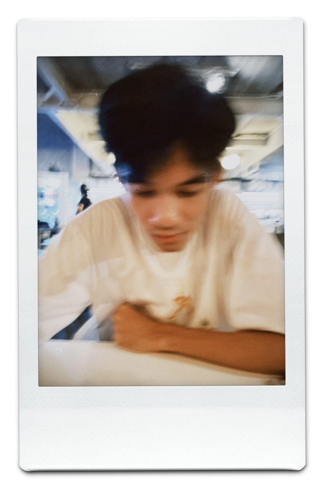

I specialize in deep learning for medical image analysis, particularly MRI tumor segmentation. My work focuses on building AI systems that improve clinical decision-making and integrate into real-world platforms.
Experienced in developing deep learning models for medical imaging, including MRI segmentation, multi-modal data processing, and AI system integration with tools like 3D Slicer.
Selected AI and research projects
U-Net based deep learning model for MRI segmentation.
• Input: T1, T2, T1GD
• Metrics: Dice, IoU
• Framework: TensorFlow
AI module integrated into 3D Slicer for automatic tumor segmentation inside clinical workflows.
End-to-end pipeline for preprocessing, training, and evaluation of MRI segmentation models.
GitHubConference papers and ongoing research in medical image analysis and deep learning.
N. Nobnop, "Pelvic Tumor Segmentation in Magnetic Resonance Images By U-Net", International Conference on Intelligent Informatics and Biomedical Sciences (ICIIBMS), 2025.
View PaperN. Nobnop, "Tumor Segmentation in MRI Images using Deep Learning with DeepLabV3+ and U-Net", 16th Biomedical Engineering International Conference (BMEiCON), 2024.
View PaperN. Nobnop, "Pelvic Tumor Segmentation from Multi-Modal MRI Using Three-Branch U-Net", 23rd International Joint Conference on Computer Science and Software Engineering (JCSSE 2026).
In Progress
Email: noppanon.derng@gmail.com
GitHub: https://github.com/Derng-nn
LinkedIn: https://www.linkedin.com/in/noppanon-nobnop-3358a336b/